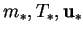
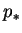
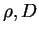

IN SPITE of the large number of previous studies of similar systems, it is necessary here to rederive the governing equations.
The species equation so obtained (2.7) is quite conventional, but in the derivation it is emphasized that it expresses the physical principle that the divergence of the absolute vapour flux vanishes. This flux is used later in the derivation of the velocity condition at mass transfer interfaces and in the selection of an appropriate normalization for the mass transfer rate. The latter is unconventional and has some interesting and useful properties.
The present momentum equation (2.10) is also fairly standard; it is included here because it differs in a simple but important way from that proposed by the principal reference for this section: Bird, Stewart and Lightfoot's Transport Phenomena (1960).
The energy equation (2.16) is derived here in some detail, since its form is not so well agreed upon as those of the previous two. In particular, the handling of the interdiffusion term has been a repeated source of error.
The equations are derived in dimensional form. The independent variables;
and its components and their operator,
; and the
dependent variables;
 and ; are subscripted with
asterisks. The dimensional coefficients appearing in the equations;
other fluid mixture properties, e.g. ;
are not, as they will eventually (§2.3) be combined into
dimensionless groups such as the Schmidt number, Sc.
All symbols are defined in the Nomenclature, page  .
.